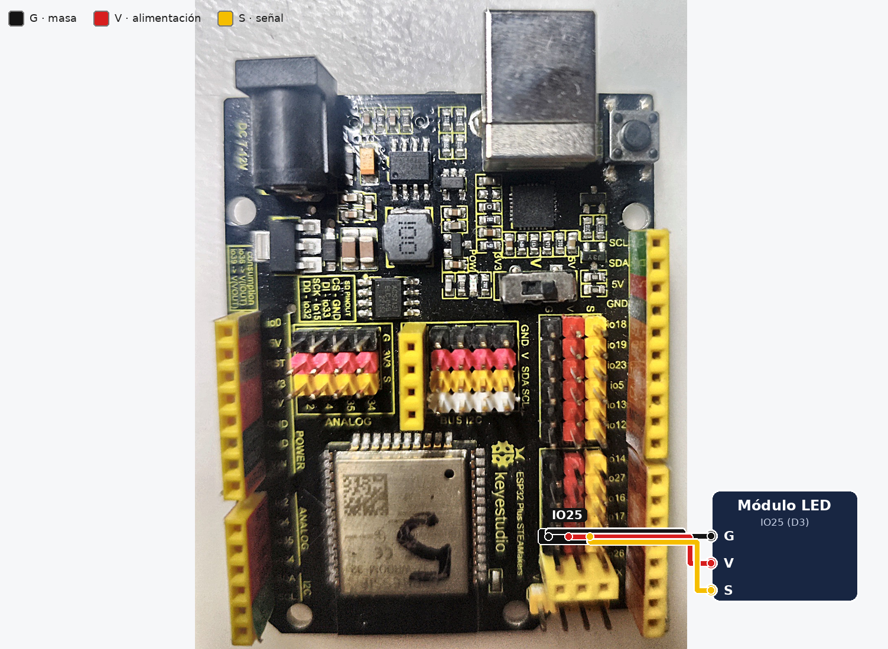
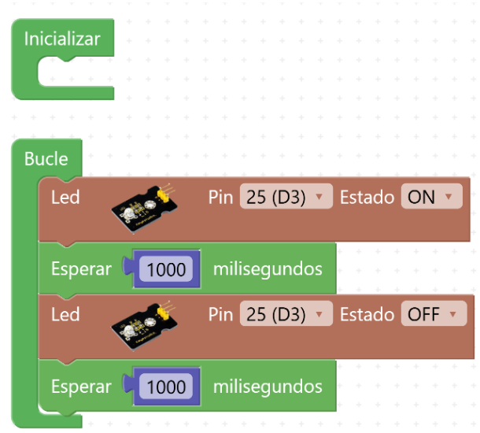
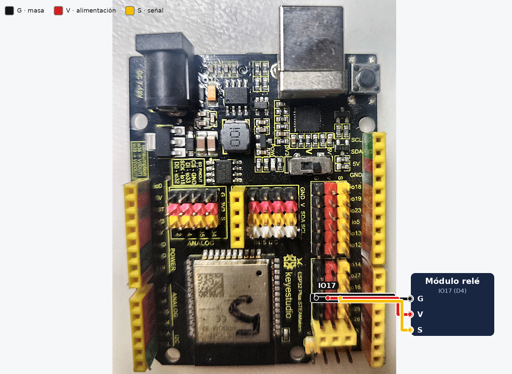
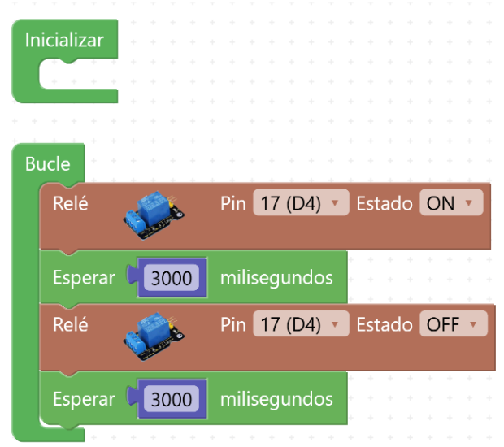
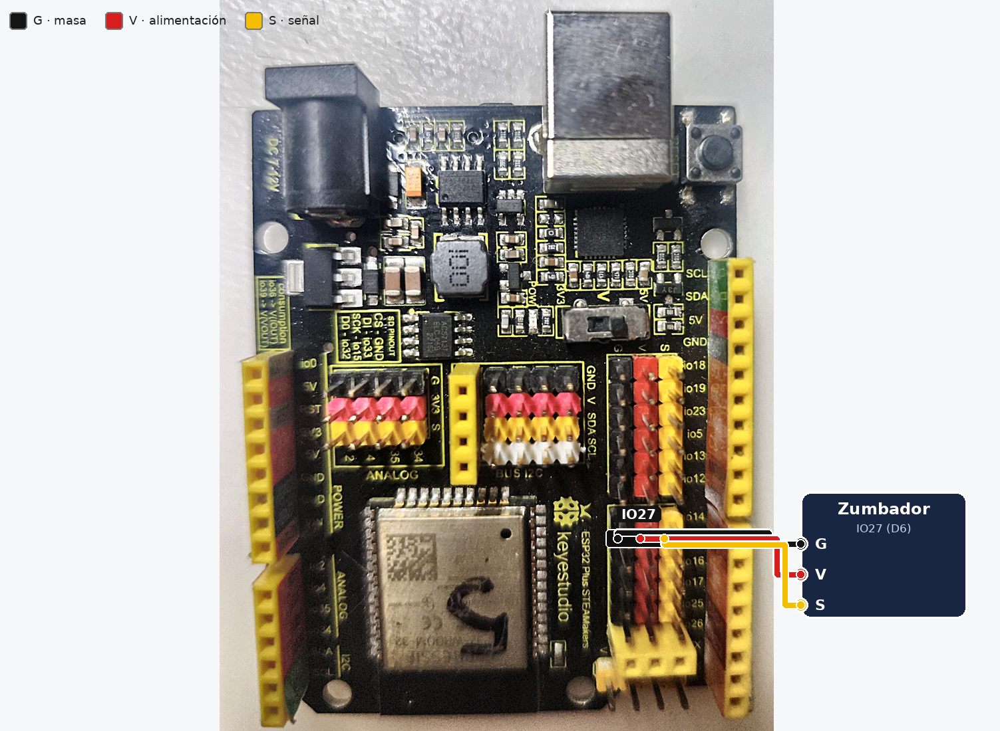
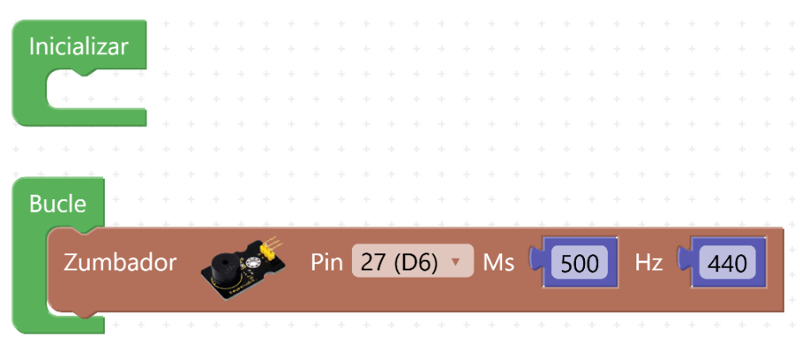
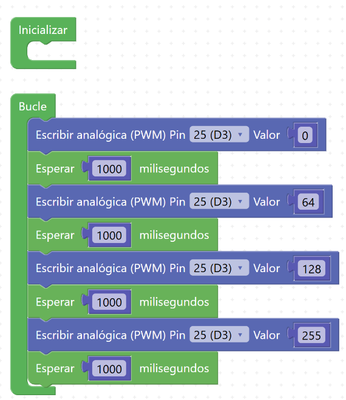

N1b Salidas digitales y PWM
Hasta ahora la placa ha leído. En este nivel actúa: enciende, conmuta y suena. Empiezas con las salidas de todo o nada (LED, relé, zumbador), planteas el motor de corriente continua y cierras con el PWM, que permite regular el brillo de un LED y la velocidad de un motor.
🎯 Entradas y salidas
Un sensor digital informa a la placa: ella lee un 0 o un 1. En una salida digital ocurre lo contrario: la placa escribe un 0 o un 1 en un pin y el módulo conectado reacciona. El pin pasa a trabajar como salida (en el código aparece como pinMode(…, OUTPUT)) y los bloques que lo manejan escriben el valor.
| Módulo | Bloque en el editor | Con un 1 | Ojo con… |
|---|---|---|---|
| LED | «Led» | Se enciende | Es la salida más sencilla: sirve para comprobar que el programa llega hasta el pin. |
| Relé | «Relé» | Cierra el contacto | Actúa como un interruptor controlado por la placa. Aísla el circuito que conmuta. |
| Zumbador activo | «Escribir digital» (pin en 1) | Suena con un tono fijo | Lleva el oscilador dentro: basta con darle tensión. |
| Zumbador pasivo | «Zumbador» (milisegundos y Hz) | Hace un chasquido | Necesita una señal con frecuencia; el bloque se la genera. |
| Motor de corriente continua | Se escribe más abajo | — | No se conecta directo a un pin: necesita un driver. |
💡 LED: tu primera salida
Un LED encendido durante un segundo y apagado durante otro. Es el «hola mundo» de las salidas y te sirve para comprobar el montaje.


🛠️ Montaje y puesta en marcha
- Con la placa desenchufada, conecta el módulo LED con G, V y S a IO25 (D3). Revísalo con la lista de comprobación y mira la serigrafía del módulo.
- Conecta por USB, construye el programa y súbelo.
- Si no parpadea, comprueba que el pin del bloque es el 25 (D3) y que el módulo está en el conector correcto.
🔌 Relé: un interruptor que manda la placa
El relé es un interruptor accionado eléctricamente. La señal de la placa mueve un electroimán interno que abre o cierra un contacto, y ese contacto conmuta otro circuito, separado del de control. Por eso permite manejar cargas que la placa no podría alimentar por sí misma. Al activarse suele oírse un «clic».


Los terminales del contacto se suelen rotular COM (común), NO (normalmente abierto) y NC (normalmente cerrado). Con el relé desactivado, COM está unido a NC; al activarlo, pasa a NO. Compruébalo con el multímetro en continuidad, sin tensión en el circuito.
🛠️ Montaje y puesta en marcha
- Con la placa desenchufada, conecta el módulo de relé con G, V y S a IO17 (D4).
- Sube el programa y escucha el clic cada tres segundos.
- Con el multímetro en continuidad, comprueba entre COM y NO que el contacto se cierra y se abre con el programa.
⚙️ Motor de corriente continua
Un motor de corriente continua no se conecta directamente a un pin de la placa. Un pin entrega una corriente muy pequeña y el motor necesita mucha más, sobre todo al arrancar. Además, al pararse genera picos de tensión que podrían dañar el pin. Se maneja siempre a través de un driver (un transistor o un módulo de puente en H, como los L298N o L298P que ofrece el editor), que recibe la señal de la placa y es quien alimenta al motor desde una fuente adecuada.
- Con dos pines del driver se elige el sentido de giro (adelante, atrás o parado).
- Con una señal PWM en el pin de habilitación se controla la velocidad: a mayor ciclo de trabajo, más giro.
- El motor se alimenta aparte; la masa de la fuente y la de la placa deben estar unidas.
🔊 Zumbadores: activo y pasivo
En el taller hay de los dos tipos y por fuera se parecen. Para distinguirlos hay una prueba sencilla: se le da un 1 (con un programa con «Escribir digital» a 1). El activo suena de forma continua porque lleva un oscilador interno. El pasivo solo hace un chasquido: necesita que la placa le envíe una señal con frecuencia, y entonces suena con el tono que tú decidas.


| Activo | Pasivo | |
|---|---|---|
| Cómo se enciende | Un 1 en el pin, como un LED | Una señal con frecuencia (bloque «Zumbador») |
| Tono | Fijo, el de fábrica | El que programes, así que puede tocar melodías |
| Qué enseña | Salida digital pura | Una salida que cambia con el tiempo, la antesala del PWM |
🌗 PWM: salidas que no son solo 0 o 1
Un pin digital solo puede dar 0 o 1. Pero si lo cambia muy rápido entre los dos, el LED o el motor «ven» un valor intermedio. Eso es el PWM (modulación por ancho de pulsos): se mantiene una frecuencia fija y se cambia la proporción de tiempo en que la señal está a 1, que se llama ciclo de trabajo.
El montaje es el mismo del LED: módulo en IO25 (D3), con G-V-S.

| Valor del bloque | Ciclo de trabajo | Efecto en un LED |
|---|---|---|
| 0 | 0 % | Apagado |
| 64 | 25 % | Brillo bajo |
| 128 | 50 % | Brillo medio |
| 255 | 100 % | Brillo máximo |
En este editor el valor va de 0 a 255 (en el código generado aparece como analogWrite(25, valor)). Por eso, cuando mapeas una lectura analógica de 0–4095 para sacarla por PWM, el rango de salida es 0–255.
🛠️ Montaje y puesta en marcha
- Conecta el módulo LED a IO25 (D3), con G-V-S.
- Sube el programa y observa los cuatro niveles.
- Cambia los valores y la espera, y comprueba qué ocurre con 10, 30 y 200.
🔁 Retos
Semáforo de dos
Con dos LED, enciende uno y apaga el otro cada segundo, de forma alterna. Dibuja el diagrama de tiempos.
Respiración
Haz que el brillo del LED suba despacio de 0 a 255 y baje de nuevo. Una pista: usa un bucle «contar con» o una variable.
Melodía mínima
Con el zumbador pasivo, toca una secuencia de cuatro notas. Decide las frecuencias y justifica el orden.
Conserva en el porfolio: foto del montaje, programa del reto y la tabla valor-brillo que has comprobado.
✅ Comprueba lo que has aprendido
1. Quieres que un LED luzca a media potencia. ¿Qué valor escribes con el bloque PWM de este editor?
2. Pruebas un zumbador con un 1 y solo hace un chasquido. ¿De qué tipo es?
3. ¿Por qué un motor de corriente continua no se conecta directo a un pin?